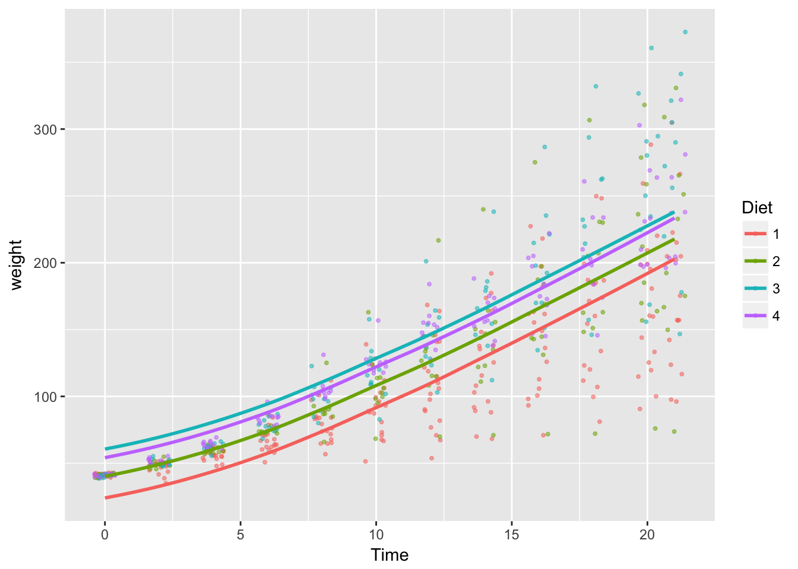
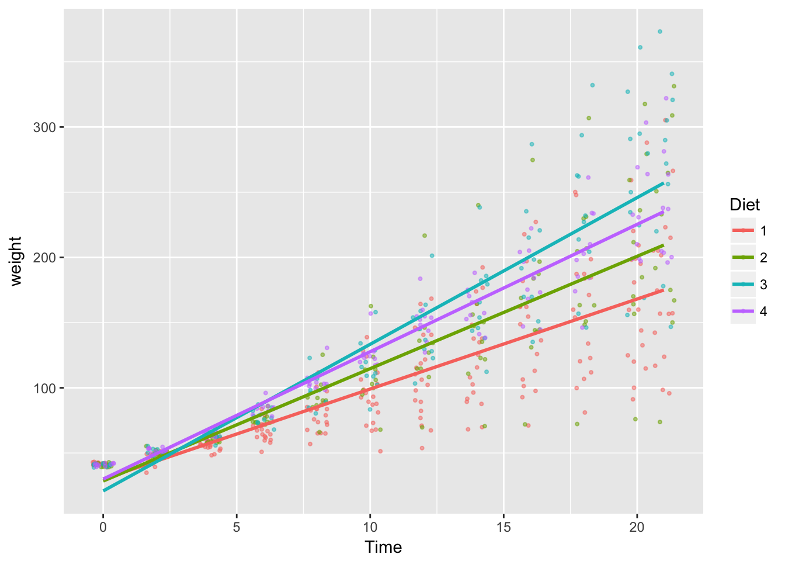
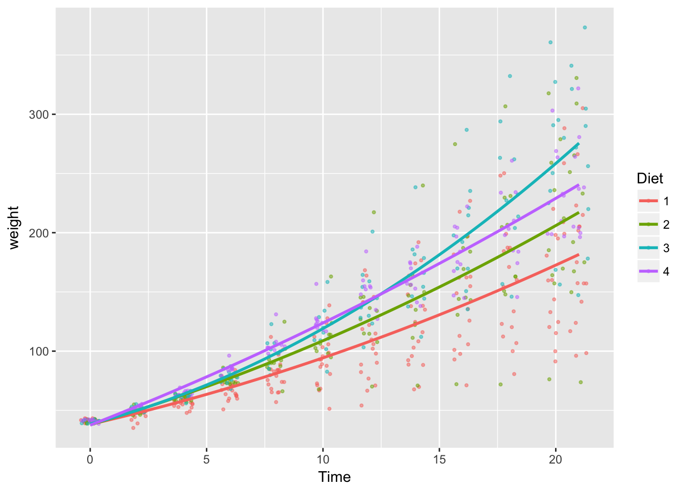

4.3 Demo. Mixed Effects Models and LSMEANS
Mixed effects models employing fixed and random parameters are popular in the analysis of experimental data. In some disciplines, there is a strong tradition of summarizing results with “LSMEANS”, a SAS’s terminology.
Here we will briefly demonstrate mixed effect estimation and lsmeans in R.
library(dplyr)
library(ggplot2)
library(lme4)
library(lsmeans)
# make a copy of dataset
ChickWeight2 <- ChickWeightMixed Effect Models
Let \(weight_{ijt}\) be the weight of chick \(i\) in Diet group \(j\) observed in time \(t\). Consider modeling the effect of Diet on weight. (If you are new to R estimation syntax, reading this may be helpful.)
Model 1 linear time trend \(\beta_{1}\), Diet fixed effects \(\alpha_{j}\), Chick random effects \(u_i\)
\[ weight_{ijt} = \alpha_{j} + \beta_{1}\: time_t + v_{ijt}, \:\: v_{ijt} = u_i+ \varepsilon_{ijt}\] where $ v_{ijt}$ is a composite error term consisting of Chick random effects \(u_i\) and random error component \(\varepsilon_{ijt}\).
model_1 <- ChickWeight2 %>%
with(lmer(weight ~ Diet + Time + (1 | Chick)))
# summary including marginal effects (coefficients)
summary(model_1)## Linear mixed model fit by REML ['lmerMod']
## Formula: weight ~ Diet + Time + (1 | Chick)
##
## REML criterion at convergence: 5584
##
## Scaled residuals:
## Min 1Q Median 3Q Max
## -3.0591 -0.5779 -0.1182 0.4962 3.4515
##
## Random effects:
## Groups Name Variance Std.Dev.
## Chick (Intercept) 525.4 22.92
## Residual 799.4 28.27
## Number of obs: 578, groups: Chick, 50
##
## Fixed effects:
## Estimate Std. Error t value
## (Intercept) 11.2438 5.7887 1.942
## Diet2 16.2100 9.4643 1.713
## Diet3 36.5433 9.4643 3.861
## Diet4 30.0129 9.4708 3.169
## Time 8.7172 0.1755 49.684
##
## Correlation of Fixed Effects:
## (Intr) Diet2 Diet3 Diet4
## Diet2 -0.550
## Diet3 -0.550 0.339
## Diet4 -0.550 0.339 0.339
## Time -0.307 -0.015 -0.015 -0.011# lsmeans: projected mean for each Diet
lsmeans(model_1, specs=c("Diet"))## Loading required namespace: lmerTest## Diet lsmean SE df lower.CL upper.CL
## 1 104.6748 5.510541 47.38 93.59138 115.7582
## 2 120.8848 7.694168 45.64 105.40941 136.3602
## 3 141.2181 7.694168 45.64 125.74275 156.6935
## 4 134.6877 7.702571 45.83 119.19541 150.1800
##
## Degrees-of-freedom method: satterthwaite
## Confidence level used: 0.95Model 2: discrete time fixed effects \(\beta_{t}\), Diet fixed effects \(\alpha_{j}\) and Chick random effects \(u_i\)
\[ weight_{ijt} = \alpha_{j} + \beta_{t} + v_{ijt}, \:\: v_{ijt} = u_i+ \varepsilon_{ijt}\]
# add a factor time variable
ChickWeight2 <- ChickWeight2 %>% mutate(Time_fac = as.factor(Time))
model_2 <- ChickWeight2 %>%
with(lmer(weight ~ Diet + Time_fac + (1 | Chick)))
# summary including marginal effects (coefficients)
summary(model_2)## Linear mixed model fit by REML ['lmerMod']
## Formula: weight ~ Diet + Time_fac + (1 | Chick)
##
## REML criterion at convergence: 5499.1
##
## Scaled residuals:
## Min 1Q Median 3Q Max
## -3.3235 -0.5158 -0.0179 0.4625 3.2968
##
## Random effects:
## Groups Name Variance Std.Dev.
## Chick (Intercept) 523.3 22.87
## Residual 770.2 27.75
## Number of obs: 578, groups: Chick, 50
##
## Fixed effects:
## Estimate Std. Error t value
## (Intercept) 24.424 6.616 3.692
## Diet2 16.310 9.427 1.730
## Diet3 36.643 9.427 3.887
## Diet4 30.230 9.434 3.205
## Time_fac2 8.160 5.550 1.470
## Time_fac4 18.660 5.587 3.340
## Time_fac6 33.006 5.587 5.908
## Time_fac8 49.945 5.587 8.940
## Time_fac10 66.537 5.587 11.909
## Time_fac12 87.945 5.587 15.741
## Time_fac14 101.947 5.620 18.141
## Time_fac16 125.667 5.653 22.229
## Time_fac18 147.774 5.653 26.139
## Time_fac20 167.253 5.687 29.407
## Time_fac21 175.710 5.723 30.703##
## Correlation matrix not shown by default, as p = 15 > 12.
## Use print(x, correlation=TRUE) or
## vcov(x) if you need it# lsmeans: projected mean for each Diet
lsmeans(model_2, specs=c("Diet"))## Diet lsmean SE df lower.CL upper.CL
## 1 106.3072 5.488820 47.51 95.26823 117.3461
## 2 122.6167 7.664476 45.76 107.20212 138.0312
## 3 142.9500 7.664476 45.76 127.53546 158.3645
## 4 136.5373 7.672861 45.96 121.10587 151.9687
##
## Results are averaged over the levels of: Time_fac
## Degrees-of-freedom method: satterthwaite
## Confidence level used: 0.95# lsmeans: projected mean for each combination of Time_fac and Diet
lsmeans(model_2, specs=c("Time_fac","Diet"))## Time_fac Diet lsmean SE df lower.CL upper.CL
## 0 1 24.42351 6.615760 99.01 11.29643 37.55059
## 2 1 32.58351 6.615760 99.01 19.45643 45.71059
## 4 1 43.08306 6.669652 101.11 29.84904 56.31707
## 6 1 57.43000 6.669652 101.11 44.19598 70.66401
## 8 1 74.36877 6.669652 101.11 61.13476 87.60278
## 10 1 90.96061 6.669652 101.11 77.72660 104.19462
## 12 1 112.36877 6.669652 101.11 99.13476 125.60278
## 14 1 126.37031 6.707010 103.14 113.06217 139.67845
## 16 1 150.09078 6.744365 105.23 136.70852 163.47304
## 18 1 172.19716 6.744365 105.23 158.81490 185.57942
## 20 1 191.67605 6.768521 106.60 178.24586 205.10624
## 21 1 200.13339 6.805510 108.76 186.62981 213.63698
## 0 2 40.73301 8.543480 70.20 23.78093 57.68510
## 2 2 48.89301 8.543480 70.20 31.94093 65.84510
## 4 2 59.39256 8.555171 70.64 42.41728 76.36785
## 6 2 73.73950 8.555171 70.64 56.76422 90.71479
## 8 2 90.67828 8.555171 70.64 73.70299 107.65356
## 10 2 107.27012 8.555171 70.64 90.29483 124.24540
## 12 2 128.67828 8.555171 70.64 111.70299 145.65356
## 14 2 142.67982 8.571485 71.16 125.67216 159.68747
## 16 2 166.40029 8.588795 71.72 149.35829 183.44229
## 18 2 188.50667 8.588795 71.72 171.46467 205.54867
## 20 2 207.98556 8.607256 72.31 190.90693 225.06419
## 21 2 216.44290 8.626723 72.94 199.32564 233.56016
## 0 3 61.06635 8.543480 70.20 44.11426 78.01844
## 2 3 69.22635 8.543480 70.20 52.27426 86.17844
## 4 3 79.72590 8.555171 70.64 62.75061 96.70118
## 6 3 94.07284 8.555171 70.64 77.09755 111.04812
## 8 3 111.01161 8.555171 70.64 94.03633 127.98690
## 10 3 127.60345 8.555171 70.64 110.62816 144.57873
## 12 3 149.01161 8.555171 70.64 132.03633 165.98690
## 14 3 163.01315 8.571485 71.16 146.00549 180.02080
## 16 3 186.73362 8.588795 71.72 169.69162 203.77562
## 18 3 208.84000 8.588795 71.72 191.79800 225.88200
## 20 3 228.31889 8.607256 72.31 211.24026 245.39752
## 21 3 236.77623 8.626723 72.94 219.65897 253.89349
## 0 4 54.65362 8.547798 70.33 37.69297 71.61428
## 2 4 62.81362 8.547798 70.33 45.85297 79.77428
## 4 4 73.31317 8.559459 70.77 56.32938 90.29696
## 6 4 87.66011 8.559459 70.77 70.67632 104.64390
## 8 4 104.59889 8.559459 70.77 87.61509 121.58268
## 10 4 121.19072 8.559459 70.77 104.20693 138.17452
## 12 4 142.59889 8.559459 70.77 125.61509 159.58268
## 14 4 156.60042 8.575756 71.29 139.58429 173.61655
## 16 4 180.32089 8.593047 71.85 163.27046 197.37133
## 18 4 202.42728 8.593047 71.85 185.37684 219.47772
## 20 4 221.90616 8.630538 73.05 204.78134 239.03099
## 21 4 230.36351 8.650333 73.70 213.19940 247.52761
##
## Degrees-of-freedom method: satterthwaite
## Confidence level used: 0.95Model 3: Diet fixed effects on liear-time growth rates \(\beta_{1j}\), Chick random effects \(u_i\)
\[ weight_{ijt} = \alpha_{0} + \beta_{1j}\: time_t + v_{ijt}, \:\: v_{ijt} = u_i+ \varepsilon_{ijt}\]
Note: we assume common intercept \(\alpha_{0}\) at Time=0 across Diet types.
model_3 <- ChickWeight2 %>%
with(lmer(weight ~ Diet*Time - Diet + (1 | Chick)))
# summary including marginal effects (coefficients)
summary(model_3)## Linear mixed model fit by REML ['lmerMod']
## Formula: weight ~ Diet * Time - Diet + (1 | Chick)
##
## REML criterion at convergence: 5488
##
## Scaled residuals:
## Min 1Q Median 3Q Max
## -3.3226 -0.5908 -0.0699 0.5435 3.5918
##
## Random effects:
## Groups Name Variance Std.Dev.
## Chick (Intercept) 532.9 23.09
## Residual 643.0 25.36
## Number of obs: 578, groups: Chick, 50
##
## Fixed effects:
## Estimate Std. Error t value
## (Intercept) 28.1852 3.8206 7.377
## Time 6.7729 0.2435 27.818
## Diet2:Time 1.8442 0.3857 4.782
## Diet3:Time 4.4756 0.3857 11.605
## Diet4:Time 2.9418 0.3906 7.532
##
## Correlation of Fixed Effects:
## (Intr) Time Dt2:Tm Dt3:Tm
## Time -0.287
## Diet2:Time 0.008 -0.581
## Diet3:Time 0.008 -0.581 0.366
## Diet4:Time 0.004 -0.573 0.361 0.361# lsmeans: projected mean for each Diet at given Time values
lsmeans(model_3, specs=c("Diet"), at=list(Time=c(5, 10, 20)))## Loading required namespace: lmerTest## Diet Time lsmean SE df lower.CL upper.CL
## 1 5 62.04951 3.661222 60.89 54.72817 69.37084
## 2 5 71.27029 3.808503 68.67 63.65444 78.88614
## 3 5 84.42731 3.808503 68.67 76.81146 92.04317
## 4 5 76.75832 3.814692 68.99 69.13009 84.38655
## 1 10 95.91377 3.895676 71.79 88.12360 103.70394
## 2 10 114.35534 4.399435 101.23 105.55780 123.15287
## 3 10 140.66939 4.399435 101.23 131.87185 149.46692
## 4 10 125.33140 4.432729 103.29 116.46729 134.19551
## 1 20 163.64230 5.254660 164.97 153.13457 174.15003
## 2 20 200.52543 6.624401 248.93 187.27864 213.77222
## 3 20 253.15353 6.624401 248.93 239.90674 266.40033
## 4 20 222.47756 6.728268 255.00 209.02306 235.93206
##
## Degrees-of-freedom method: satterthwaite
## Confidence level used: 0.95Model 4: Diet fixed effects on quadratic-time growth rates \(\beta_{1j}\), Chick random effects \(u_i\)
\[ weight_{ijt} = \alpha_{0} + \beta_{1j}\: time_t + \beta_{2j}\: time_t^2 + v_{ijt}, \:\: v_{ijt} = u_i+ \varepsilon_{ijt}\]
Note: we assume common intercept \(\alpha_{0}\) at Time=0 across Diet types.
model_4 <- ChickWeight2 %>%
with(lmer(weight ~ Diet:Time + Diet:I(Time^2) - Diet + (1 | Chick)))
# summary including marginal effects (coefficients)
summary(model_4)## Linear mixed model fit by REML ['lmerMod']
## Formula: weight ~ Diet:Time + Diet:I(Time^2) - Diet + (1 | Chick)
##
## REML criterion at convergence: 5463.7
##
## Scaled residuals:
## Min 1Q Median 3Q Max
## -4.0129 -0.5185 -0.0110 0.5288 3.4598
##
## Random effects:
## Groups Name Variance Std.Dev.
## Chick (Intercept) 522.4 22.86
## Residual 600.6 24.51
## Number of obs: 578, groups: Chick, 50
##
## Fixed effects:
## Estimate Std. Error t value
## (Intercept) 37.99451 4.14966 9.156
## Diet1:Time 4.53465 0.85256 5.319
## Diet2:Time 5.78814 1.12549 5.143
## Diet3:Time 5.11572 1.12549 4.545
## Diet4:Time 7.79434 1.13449 6.870
## Diet1:I(Time^2) 0.10316 0.03995 2.583
## Diet2:I(Time^2) 0.13111 0.05262 2.491
## Diet3:I(Time^2) 0.29413 0.05262 5.589
## Diet4:I(Time^2) 0.08703 0.05356 1.625
##
## Correlation of Fixed Effects:
## (Intr) Dt1:Tm Dt2:Tm Dt3:Tm Dt4:Tm D1:I(T D2:I(T D3:I(T
## Diet1:Time -0.349
## Diet2:Time -0.259 0.090
## Diet3:Time -0.259 0.090 0.067
## Diet4:Time -0.259 0.090 0.067 0.067
## Dt1:I(Tm^2) 0.281 -0.961 -0.073 -0.073 -0.073
## Dt2:I(Tm^2) 0.207 -0.072 -0.962 -0.053 -0.053 0.058
## Dt3:I(Tm^2) 0.207 -0.072 -0.053 -0.962 -0.053 0.058 0.043
## Dt4:I(Tm^2) 0.206 -0.072 -0.053 -0.053 -0.961 0.058 0.043 0.043# lsmeans: projected mean for each Diet at given Time values
lsmeans(model_4, specs=c("Diet"), at=list(Time=c(5, 10, 20)))## NOTE: Results may be misleading due to involvement in interactions## Diet lsmean SE df lower.CL upper.CL
## 1 108.9524 4.349821 88.98 100.3094 117.5954
## 2 128.4676 5.413575 131.34 117.7109 139.2243
## 3 149.1506 5.413575 131.34 138.3939 159.9073
## 4 144.1593 5.415879 131.77 133.3981 154.9206
##
## Results are averaged over the levels of: Time
## Degrees-of-freedom method: satterthwaite
## Confidence level used: 0.95Visualizing Model Fit
Raw data
# raw data plot
base_plot <-
ChickWeight2 %>%
ggplot(aes( x = Time,
y = weight,
color = Diet)) +
geom_jitter(size =.75, alpha=.5)
base_plot
Model 1 fit (approx.)
# overlay model_1, approximated by y ~ x
base_plot +
geom_smooth(
aes(x = Time,
y = fitted.values(model_1),
color = Diet),
method='lm', formula = y ~ x, se=FALSE)
Model 2 fit (approx.)
# overlay model_2, approximated by loess
base_plot +
geom_smooth(
aes(x = Time,
y = fitted.values(model_2),
color = Diet), se=FALSE)## `geom_smooth()` using method = 'loess'
Model 3 fit (approx.)
# overlay model_3, approximated by y ~ x
base_plot +
geom_smooth(
aes(x = Time,
y = fitted.values(model_3),
color = Diet),
method='lm', formula = y ~ x, se=FALSE)
Model 4 fit (approx.)
# overlay model_4, approximated by y ~ x + x^2
base_plot +
geom_smooth(
aes(x = Time,
y = fitted.values(model_4),
color = Diet),
method='lm', formula = y ~ x + I(x^2), se=FALSE)